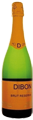
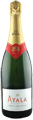
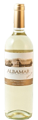
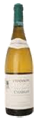

Vin
Mousserende
|
Cava Brut, Masia Dibon - Spanien
Lavet på ”champagne-metoden”, dvs. 2 gæringen foregår i flaske. Den er lavet på de lokale druer, macabeo, xerello og perellada. Det er en meget elegant cava.
Rank og frisk, med en livgivende frugtsyre og en flot mousse. Perfekt til aperitif, til skaldyr.
”Best Buy” og 88 point i WineEnthusiast Magazine
glas 55,- flaske 255,-
|
 |
|
Ayala Champagne Brut - Frankrig
Brut Majeur, er sammensat af flere årgange af husets kræsne kældermester.
En afstemt blanding af druerne: 45% Pinot Noir, 30% Chardonnay og 25% Pinot Meunier.
Duften er rig og kompleks, smagen er livlig, åben, med en cremet fylde og fløjlsblød.
glas 88,- flaske 475,-
|
 |
Hvidvin - oversøiske
|
Sauvignon Blanc ALBAMAR, William Cole - Chile
William Cole ligger i det kølige Casablanca udmod Stillehavets kyst i Chile. Vinen er tør, frisk og lækker aromatisk med mindelser om sommer og hyldeblomst.
flaske 228,-
|
 |
|
Chardonnay Colombine Reserve, William Cole - Chile
Denne vin har lagret 6 måneder på egefade, som giver vinen en stor fylde og en del fedme.
Desuden giver lagring på fade mere duft og smag til vinen. Vinen er frisk, fyldig og mineralsk i en perfekt harmoni. Lang eftersmag. God ledsager til laks, hummer, eller lette kødretter.
flaske 275,-
|
 |
Hvidvin – Europa
|
Pinot Grigio, Corte Majoli - Italien
Pinot Grigio hedder den i Italien, i andre lande er den også kendt som Pinot Gris.
En fyldig hvidvin af slagsen. Duften er let krydret, smagen ret kraftig af en hvidvin,
med masser af tyngde og cremet fylde. Eftersmagen hænger ved rigtig længe.
flaske 259,-
|
 |
|
Chablis, Maison Chanson - Frankrig
En af denne verdens mest berømte hvide vine er Chablis, som regnes for et underområde til Bourgogne. Det er samme drue Chardonnay som også benyttes til de hvide bourgogner.
Chablis er udelukkende hvide vine og er kendetegnede ved deres friskhed, er meget tør, lidt fintet i duften og ikke for tung i munden.
Den er meget sprød og en vin, som fordeler sig blidt i munden. Klassisk Chablis.
flaske 425,-
|
 |
Rosévin
|
Rosado Fuenteseca, Bodegas Sierra Norte - Spanien
Denne rosé på den meget spændende lokale Bobal drue og den internationale Cabernet Sauvignon. Netop den lokale Bobal er meget respekteret i hele Spanien for at frembringe fremragende rosévine.
En flot og fyldig rosé som er perfekt som en gennemgående vin til hele måltidet, eller blot som et godt glas alene.
flaske 245,-
|
|
|
Rosado Reynal, Bodegas Pinord - Spanien
I farven har vinen en flot laksfarve med rødligt skær.
I duften møder man et overflod af nuancer, som f.eks. jordbær, hindbær og skovbær.
I smagen finder man også mørke toner af brombær og blåbær. Det hele pakket ind i lette og friske bobler.
flaske 252,-
|
Rødvin - oversøiske
|
Cabernet Sauvignon ALBAMAR, William Cole - Chile
Spillende rød og klar farve. Dufter af mørke skovbær, især solbær, vanille, lidt sødt krydret.
Smagen har fylde, intensitet, en super struktur, et godt bid og en frugtmættet saftighed.
”William Cole har de seneste år været en blandt de mest prisvindene chilenske vinproducenter”
flaske 228,-
|
|
|
Blend Reserve, Casa Tamaya - Chile
Casa Tamaya er landets yngste og nordligste placerede vineri. Malbec / Cabernet / Syrah er en usædvanlig chilensk vin, da den er blandet af tre forskellige druetyper. Vinen er lagret 10 måneder på franske egefade og den lagring sammen med Syrah druen har givet vinen et behageligt krydderi. Farven er dyb med en begyndende lysere kant. Duften er varm og moden med bær, vanilje. Den blide smag er fyldig og dejlig saftig. En vin, hvor et enkelt glas sjældent er nok…
flaske 299,-
|
|
|
Shiraz Black Chook, McLaren Vale - Australien
The Black Chook er 94% Shiraz & 6% Viognier. En typisk blanding man også finder I den franske Rhône dal.
14,5% alkohol pakket ind en kraftfuld vin, som er mørk & dyb – modne bær, liflige frugter, strejf af sødmefulde krydderier & en saftig intens smag er hvad The Blanck Chook tilbyder.
Lige til at gå til – gerne et par glas eller tre…!
flaske 389,-
|
 |
|
Zinfandel Temptation, Alexander Valley Vineyards
Temptation Zinfandel er blevet til med 92% Zinfandel og 8% Sangiovese… Et mix af den aromatiske og sødmefulde Zinfandel, hvori Sangiovese bidrager med lidt syre og især farvestof. Tæt farve. Saftig vin med duft af jordbær, chokolade og den charmerende underliggende vanilje fra fadet. Smag er blid, dog ret fyldig og i en frisk og potent stil.
flaske 375,-
|
Rødvin - Europa
|
Barolo, Terre da Vino - Italien
Piemonte er sammen med Toscana det italienske vinmekka, hvad angår store, spændende og kostbare vine.De store vine fra Piemonte som Barolo og Barbaresco er at finde på enhver top restaurant verden over. Vinen er lavet på 100% Nebbiolo og derefter lagret 18-24 måneder på slovenske fade.
Flot rubinrød med granatskygger. Duften er åben og intens med toner af lyse røde bær, især hindbær og jordbær. Smagen er stofrig og fyldig med en stor elegant frugt.
flaske 575,-
|
|
|
Amarone della Valpolicella, Tezza - Veneto
Sammensat af druerne 75% Corvina, 20% Rondinella og 5% Molinara.
Mørk og tæt i farven. Aroma af kakao, mørk chokolade og kirsebær. I munden er den kraftig med en solid frugtsødme, men på trods af den store fylde er den elegant og en stor nydelse at drikke.
½ flaske 398,- flaske 698,-
|
|
|
Valpolicella Superiore Ripasso, Corte Majoli - Italien
Ripasso-metoden giver den lidt lettere Valpolicella en mere Amarone-agtig karakter. En vis mængde af de druer, som bruges til Amarone ”genpresses” og benyttes i Valpolicella Ripasso. Sammensat af druerne 75% Corvina og 20% Rondinella, 5% Molinara.
Vinen har lagret 12 måneder på fade og 6 måneder på flaske før den frigives til salg. God tæt brilliant spillende farve. Dufter af små rare imødekommende bær, som giver en charmerende friskhed i glasset. Smagen er fyldig, frisk og dejlig frugtet på den behagelige måde.
flaske 349,-
|
|
|
Domaine de Calet, “Cuvée Long Terme” - Frankrig
Sammensat af Carignan, Grenache Noir, Mourvedre og Syrah. Fra vinstokke, som er optil 60 år gamle - smager som en ”lille Chateauneuf-du-Pape”. En vinfarve, som er mørk og tæt. Fasthed og fylde i bouqueten.
Smager lækkert frugtet, med modenhed, sødme og med god krop.
flaske 299,-
|
|
|
Ch. Sipian Cru Bourgeois - Frankrig
Kraftfuld mørk farve! I duften finder man moden frugt, ristet brød fra fadlagringen, vanille og anelse frugtsødme. Smagen er moden, blid og har den harmoni som gør den lækker at nyde i dag.
flaske 399,-
|
Dessertvine
|
Moscato d’Asti, Terre da Vino - Italien
Vinen har en flot strågul farve med et let perlende udseende. Den dufter meget typisk af Moscato med sin lidt krydrede og blomstrede stil. Moscato d’Asti har en utrolig dejlig og frisk smag, som er liflig og tilpas fyldig.
flaske 249,-
|
|
|
Ruby Port, Quinta de la Rosa - Portugal
Dette er la Rosas stolthed og en blandt de bedste af slagsen overhovedet. Den blandes med stor præcision, så den år efter år besidder samme kvalitet og elementer.
glas 40,- flaske 285,-
|
|
|
PX Pedro Ximenez, Bodegas Hidalgo (50cl.) - Spanien
Pedro Ximénez er lavet af soltørret druer og modnes i over 40 år.Den er mørk, intens sød med en tørret blomme smag , og en spændende duft af rosiner.
glas 55,- flaske 435,-
|